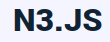
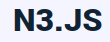

JSON Schema LD specification¶
JSON Schema for Linked Data, hereafter JSC-LD/jsc-ld, is a syntactic sugar for JSON Schema to enable generative interoperability by means of representing JSON schema in RDF vocabularies (RDF Schema) and RDF shapes (SHACL).
A JSON Schema is a declarative vocabulary specifies a number of rules to describe what objects serialized in JSON based format should look like. With JSC-LD, domain models and application profiles are extracted from existing implementation model in JSON Schema and represented in RDF Schema and Shacl shapes.
Built With

 

Getting Started¶
Prerequisites¶
Usage¶
$ jsc-ld --source json_schema.js --out out --config config.js
$ jsc-ld --source json_schema.js --config config.js
$ jsc-ld -s json_schema.js -c config.js
Options
-c, --config config_file JSC-LD configuration file
-s, --source path/to/source/file|directory Path to a JSON schema file or a directory contains JSON schema files
-o, --out path/to/directory Path to output directory defaults to "out"
-h, --help Display this usage guide
Limitations¶
JSC-LD is developed upon the latest draft 2020-12 to describe data formats. Some custom keywords defined in a prior draft may not be supported.
Keywords that are supported by JSC-LD can be found Supported JSON Schema keywords.
contribute¶
Do not hesitate to report a bug.
Lisense¶
This code is copyrighted by IDLab, Ghent University – imec and released under the MIT license.
Contact¶
Jiao Long, Brecht Van de Vyvere and Pieter Colpaert
IDLab, Ghent University – imec